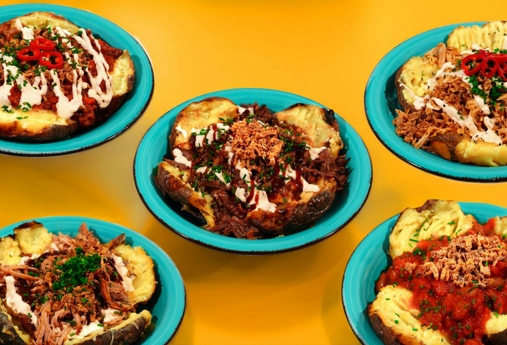
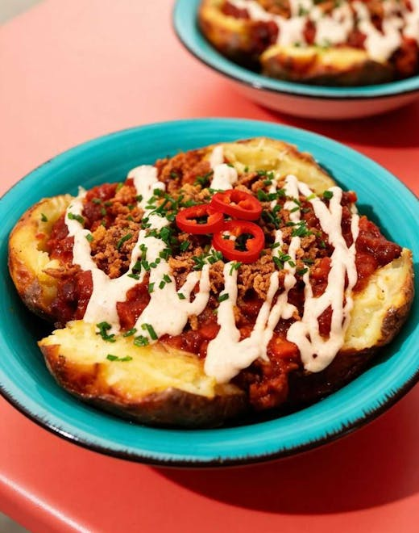
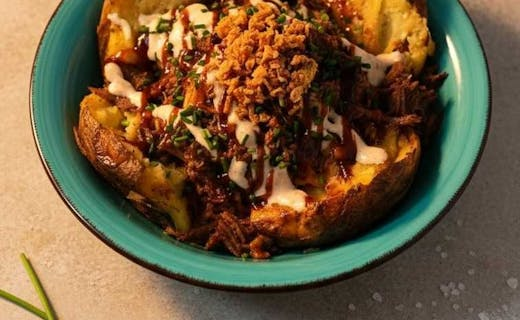
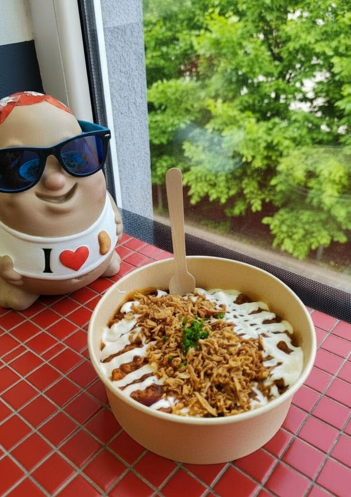

Probajte savršeno pečene domaće krumpire punjene vrhunskim sastojcima.
Naruči odmah

Punjeni krumpiri (eng. Spuds) popularan koncept ulične hrane u Engleskoj gdje se krumpiri peku cijeli u kori i onda pune raznim nadjevima i dodacima. Svoje korijene vuče i iz Turske gdje se prodaje kao “kumpir”. Zbog svoje jednostavnosti, brzine pripreme i hranjivosti postao je popularan i kod nas u Hrvatskoj.
U KRUMPIR&Co mi smo tome pristupili ozbiljno. Za savršeni punjeni krumpir trebaju vrhunski sastojci. I tu kod nema pregovora. Kod nas je temelj:
Međimurski krumpir — pažljivo odabran da ostane mekan i sočan nakon pečenja, a izvana dobije koricu.
Pravi maslac — ne margarin. Ne mješavine. Pravi maslac. Topi se u vrućem krumpiru i ulazi u svaku poru. Daje dubinu okusa, slatkoću i kremoznost.
Mozzarella & Cheddar miks — Cheddar zbog karaktera i blage pikantnosti. Mozzarella zbog savršene topljivosti. Zajedno daju idealan spoj koji se topi pod vrućim nadjevima.
To je naša baza. A svaki nadjev koji dolazi na vrh biramo s istom pažnjom. U ponudi imamo 5 nadjeva: Chilli con carne, Domaći grah, Pulled Chicken, Beef i Pork, a radimo i na novim okusima. Dobrodošli u KRUMPIR&Co.

Jednostavno odaberite svoju omiljenu kombinaciju, dodajte je u košaricu, a mi ćemo se pobrinuti za ostalo. Online naručivanje omogućuje vam da uživate u našim punjenim krumpirima kod kuće, na poslu ili gdje god želite nešto zaista zasitno i ukusno. Svaku narudžbu pripremamo svježu kako biste mogli uživati u maksimalnoj kvaliteti i punom okusu svakog jela.
Ako imate bilo kakvih pitanja o našoj ponudi, naručivanju, dostavi ili sastojcima, slobodno nas kontaktirajte. Rado ćemo vam pomoći, savjetovati vas o izboru i odgovoriti na sve što vas zanima. Krumpir&Co, ne temeljimo se samo na kvalitetnoj hrani, već i na prijateljskoj komunikaciji i zadovoljstvu naših kupaca. Tu smo za vas kad god vam zatrebamo.